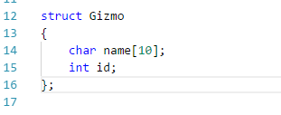
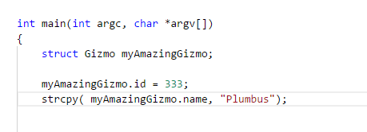
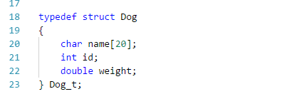
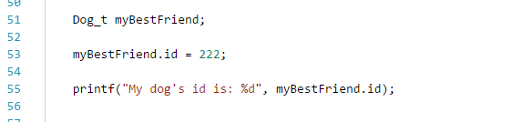
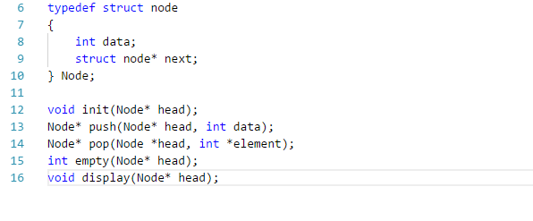
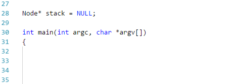
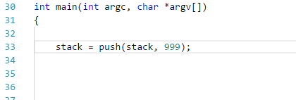
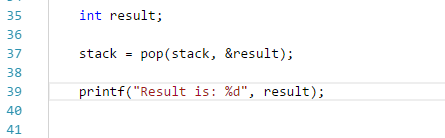

Why Are We Here? Just to Suffer?
Now for another exciting episode of “Why Are We Learning This!?”
Did you get your C compiler set up in Windows? Set the environment variables in PATH correctly? No?
Well just use Linux, I guess. The instructions all work the same. You should be pretty comfortable with writing C anyway after a few shots at C programming with our good friend Kitty Wong. She’s covered most of the basics, so I won’t be going over the simple stuff. You should be familiar with arrays, pointers (maybe), variables, printf, all that cool stuff.
Of course, there always remains the lingering question of “WHY?”
Why did we come to a course that teaches Java to learn about an ancient programming language used by our ancestors to land space shuttles on the moon?
Because we didn’t come here to learn how to write Java. We came here to learn how to be programmers.
Now, let’s be programmers.
I have a somewhat…unusual demo. In order to understand it better, we’re going to have to delve a little bit deeper into C. The good news is, it’s mostly concepts we are already more or less familiar with. There’s nothing new or shocking here, just things have a tendency to be presented in a different way.
First up is the struct. The short explanation is that a struct is an object. Except not really,
because C doesn’t have objects. If it did, it would be C++, and then we would all be sad. Structs allow us to
define our own simple data structures. A struct is just a collection of variables grouped together, under one
name in a block of memory. Structs differ from objects in that they don’t have methods. Make sure not to forget that.

Here, we declare a struct named after our favorite object, Gizmo. Take a moment to think of your positive memories all the way back in second semester before you were miserable. Think about all the fun times you have learning Java with Maryam. Gizmo has 2 members: 'name', which is an array of 10 characters (or a String, if you choose to call it that) and an int ‘id’.

Here, I declare a srtuct variable of type Gizmo, and I assign it the name ‘myAmazingGizmo’. Then, I assign some values to members of the struct. Very similar to how it’s done in Java. There are other ways to do it, but this way is the most syntactically familiar. Take note of the use of strcpy function to get the string into the char array of our Gizmo. It’s not always as simple as using the ‘=’ symbol, which Java has tricked us into thinking is literally magic.
There is also a way to combine the typedef keyword with our struct, which allows us to create our very own type.
We’ll create a type Dog, which allows us to omit the struct keyword in future variable declarations.

Here, we declare a struct and define a type in the same statement. References to type Dog can now be done with the
identifier Dog_t rather than struct Dog. This simplifies things a bit, and gives us a little bit more Java-like feeling to make us more comfortable.

The above is an example of declaring a Dog, setting its id to some value, then printing it out. All very familiar to us. Note that there is the trailing _t after Dog. This is to identify that Dog is a type, as a convention in C, so that we know it’s not a variable name. Dog_t, in this instance, refers to the type.
Of course, the good thing about conventions is that we can safely ignore them, and the only consequence is the ire of our peers.
Now that we can create and define structures, we can do more complex things with our code. As we all know, the fundamental unit of all computing is…the stack! Yes, the dreaded stack. Deep down inside, nearly every programming concept, every action, every command, defers to either a stack or a queue. Making a stack is simple if you know what you’re doing, or can read and follow instructions. In this blog we'll cover the operations of the stack, without delving into all the source code. Because you and I literally do not have infinite amounts of time. We'll go over the operations and the what of the stack without the how.
Like so:

This is the contents of a header file, “stack.h”. Header files are useful for providing information to the compiler about our programs before we actually try and compile them. You may have experienced, during your trials and tribulations in C, that you can’t have your main method first and then make all your functions underneath. You either need a header file, or you need to prototype your functions above main by typing the function signature, so the compiler doesn’t get confused and hurl insults at you.
This header file identifies the basic element of our stack data structure, the Node. This node can only store ints as its content, with the identifier ‘data’. The only other member of Node is ‘next’, which is a pointer to a Node. Each element in the stack, as we remember from Semester 3, only points to other members of the stack. Remember also, that the stack follows the ‘Last In, First Out’ principle, so the top of our stack we consider to be the ‘head’.
Some of the function names will be familiar here, such as push and pop. The approach is basically the same. Push puts a Node on the stack, pop removes a Node. However the return types are somewhat unique, in that these functions return a pointer to a Node when they finish. Perhaps more confusing, the fact that both accept a pointer to a node – called ‘head’ – as arguments, and the pop function accepts a pointer to an int. All the body of these functions is defined in the 'stack.c' file, but the actual code body is not that important, we can just take a look at what the stack is doing to get a sense of its usage in C.
Let’s break it down and put our stack to work in a new program.

I start by declaring a pointer to a Node globally in my program. Remember, global variables can be reached anywhere in the program. Depending on how you want your stack to work, this may or may not be desirable. If you decide to not make the stack global, you can always pass it as an argument to other functions.
We will have to keep careful track of this stack as our program executes. This is because every time the stack performs an operation it returns a pointer to the new top of the stack. If we don’t retrieve and store this pointer back in the variable named ‘stack’ we will not be pointing to the top of the stack anymore. Odds are we will be pointing at nothing, or some illegal section of memory.

So we call the push function, passing the pointer stack itself as one parameter, and 999 (the number we want to store) as the other. Once the push operation completes, it returns the pointer to the new top of the stack to be stored in the variable ‘stack’. Now, we are still pointing at the top of the stack.

Now to use the pop function. Pop also returns a pointer to a Node, so we must always remember to store that reference back in the variable ‘stack’ as our program executes. You may recall from the header file that pop accepts a pointer to an int as its second argument. This is because we need to get the element from pop, but we’re already getting the Node pointer as the return type, and we can only return 1 type at a time. So we pass a pointer to an int to the function, and we can access the data in the node this way, as the pop function will cause the int pointer to be pointing to the data it was holding.
We use the ‘&’ operator here, which is C’s ‘address of’ operator. We pass the address of ‘result’ in to the function. The address of ‘result’ is really a pointer, as every memory address points to something. We know in this case that this memory address is where we want ‘result’ to get the int from our Node at the top of the stack. What follows is the printf statement, which prints the previous value stored, 999, to the console.
Once you can place things on the stack and take them off, the sky is basically the limit with what you can
accomplish! You can now create your own types with the struct and typedef
keywords, so the complexity of your C programs can scale up a great deal.
Keep in mind that C programs have many advantages over other languages, despite its age. C is still among the fastest languages available. Even better, C programs don’t need an operating system to run. If you’re really keen, your C program can BE your operating system.
If OS isn’t your thing, maybe you could use C to create something unique of your own. Many interpreted languages, such as Python, have their interpreter built in C. You could try building your own interpreter, or even your own compiler! And if you get that far, you can use your interpreter to read and execute your very own programming language! All things are possible with the glory of C.
Of course, you can make a language interpreter in Java. It would just be dreadfully slow. Your interpreter would interpret your language, which would be processed by the compiler into bytecode…which would be interpreted by the JVM…and processed into machine code…which would finally be executed by the CPU.
Skip the middle-man and build something cool in C!